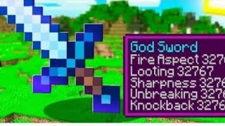

Minecraft Oggy Armour Mod

There are thousands of mod available, so it can be stressful for you to find the perfect one.
In this article I am going to provide one of the best Mod named Oggy Armour Mod for Minecraft.
Enchanments Of The Sword And Armour
Protection 32767
Feather falling 32767
Thorns 32767
Respiration 32767
Death Strider 32767
Aqua Affinity 32767
Soul Speed 32767
Sharpness 32767
Fire Aspect 32767
Looting 32767
Silk Touch 32767
Unbreaking 32767
Flame 32767
Luck Of The Sea 32767
Impaling 32767
Knockback 32767
Efficiency 32767
Power 32767
Punch 32767
Infinity 32767
Lure 32767
Riptide 32767
Multishot 32767
Quick Charge 32767
Minecraft Oggy Armour Mod Download
Follow the steps provided below to Download Oggy Armour Mod for Minecraft.
Download The Oggy Armour Mod From Here
Firstly download the mod pack from the link provided above
Then find your file in the folder 'Downloads' in ZArchiver
Then extract the downloaded file. It will ask you a password which is 'SUBSCRIBE'
After extracting, You will see a file named 'epF1XwuWAAA='
Copy the folder and paste it into the path - Games\com.mojang\MinecraftWorlds
Then open your Minecraft
And then click the the world of strongest armour
And ENJOY!
....
Credits - Technical Akubaba